<!DOCTYPE html>
<html lang="ru">
<head>
    <meta charset="UTF-8">
    <meta name="viewport" content="width=device-width, initial-scale=1.0">
    <title>Волшебный Мир Диснея — Фан-сайт</title>
    <link rel="stylesheet" href="https://cdnjs.cloudflare.com/ajax/libs/font-awesome/6.0.0-beta3/css/all.min.css">
    <style>
        /* All of your CSS code that is currently inside the <style> tags goes here */
        @import url('https://fonts.googleapis.com/css2?family=Pacifico&family=Roboto:wght@300;400;700&display=swap');

        :root {
            --disney-blue: #0077c2;
            --disney-gold: #ffd700;
            --light-gray: #f4f4f4;
            --dark-gray: #333;
            --text-color: #555;
        }

        body {
            font-family: 'Roboto', sans-serif;
            margin: 0;
            padding: 0;
            background-color: var(--light-gray);
            color: var(--text-color);
            line-height: 1.7;
        }

        header {
            background: linear-gradient(to right, var(--disney-blue), #66afe9);
            color: white;
            padding: 2rem 0;
            text-align: center;
            box-shadow: 0 4px 8px rgba(0, 0, 0, 0.2);
        }

        header h1 {
            font-family: 'Pacifico', cursive;
            font-size: 3.5rem;
            margin: 0;
            text-shadow: 2px 2px 4px rgba(0, 0, 0, 0.3);
        }

        header p {
            font-size: 1.2rem;
            margin-top: 10px;
            opacity: 0.9;
        }

        nav {
            background-color: var(--disney-gold);
            padding: 0.8rem 0;
            text-align: center;
            box-shadow: 0 2px 4px rgba(0, 0, 0, 0.1);
        }

        nav ul {
            list-style: none;
            padding: 0;
            margin: 0;
            display: flex;
            justify-content: center;
            flex-wrap: wrap;
        }

        nav ul li {
            margin: 0 12px;
        }

        nav ul li a {
            color: var(--dark-gray);
            text-decoration: none;
            font-weight: bold;
            font-size: 1.05rem;
            padding: 5px 10px;
            border-radius: 5px;
            transition: background-color 0.3s ease, color 0.3s ease;
        }

        nav ul li a:hover {
            background-color: rgba(255, 255, 255, 0.3);
            color: var(--disney-blue);
        }

        .container {
            max-width: 1200px;
            margin: 30px auto;
            padding: 0 20px;
        }

        section {
            background-color: white;
            padding: 30px;
            margin-bottom: 30px;
            border-radius: 10px;
            box-shadow: 0 2px 10px rgba(0, 0, 0, 0.08);
        }

        section h2 {
            font-family: 'Pacifico', cursive;
            color: var(--disney-blue);
            font-size: 2.5rem;
            text-align: center;
            margin-bottom: 30px;
            text-shadow: 1px 1px 2px rgba(0,0,0,0.1);
        }

        /* Обновленные стили для сетки фильмов */
        .movie-grid {
            display: grid;
            grid-template-columns: repeat(auto-fit, minmax(280px, 1fr)); /* 3 колонки на широких экранах, адаптивно */
            gap: 25px;
            margin-top: 30px;
        }

        .movie-card {
            background-color: var(--light-gray);
            border-radius: 10px;
            overflow: hidden;
            box-shadow: 0 4px 12px rgba(0, 0, 0, 0.1);
            transition: transform 0.3s ease, box-shadow 0.3s ease;
        }

        .movie-card:hover {
            transform: translateY(-5px);
            box-shadow: 0 6px 16px rgba(0, 0, 0, 0.15);
        }

        .movie-card img {
            width: 100%;
            height: 200px; /* Задаем фиксированную высоту для постеров в сетке */
            object-fit: cover;
            display: block;
        }

        .movie-card-content {
            padding: 20px;
        }

        .movie-card h3 {
            font-family: 'Pacifico', cursive;
            color: var(--disney-blue);
            margin-top: 0;
            font-size: 1.8rem;
            margin-bottom: 10px;
        }

        .movie-card p {
            font-size: 0.95rem;
            color: var(--text-color);
            margin-bottom: 15px;
            min-height: 40px; /* Фиксированная высота для краткого описания */
            overflow: hidden;
            text-overflow: ellipsis;
        }

        .movie-card .read-more {
            display: inline-block;
            background-color: var(--disney-blue);
            color: white;
            padding: 8px 15px;
            border-radius: 5px;
            text-decoration: none;
            font-weight: bold;
            font-size: 0.9rem;
            transition: background-color 0.3s ease;
        }

        .movie-card .read-more:hover {
            background-color: #005a9c;
        }

        /* Styles for Movie Detail Section (модальное окно) */
        .movie-detail-overlay {
            display: none; /* Hidden by default, show with JS */
            position: fixed;
            top: 0;
            left: 0;
            width: 100%;
            height: 100%;
            background-color: rgba(0, 0, 0, 0.7);
            z-index: 1000;
            overflow-y: auto;
            padding: 20px;
            box-sizing: border-box;
        }

        .movie-detail-content {
            background-color: white;
            max-width: 1000px;
            margin: 50px auto;
            padding: 30px;
            border-radius: 10px;
            box-shadow: 0 5px 15px rgba(0, 0, 0, 0.3);
            position: relative;
        }

        .movie-detail-close {
            position: absolute;
            top: 15px;
            right: 25px;
            font-size: 2rem;
            cursor: pointer;
            color: var(--dark-gray);
        }

        .movie-info-header {
            display: flex;
            gap: 30px;
            margin-bottom: 30px;
            flex-wrap: wrap;
        }

        .movie-info-header img {
            width: 250px;
            height: auto;
            border-radius: 8px;
            box-shadow: 0 2px 8px rgba(0, 0, 0, 0.1);
        }

        .movie-info-details {
            flex: 1;
        }

        .movie-info-details h2 {
            font-family: 'Pacifico', cursive;
            color: var(--disney-blue);
            font-size: 3rem;
            margin-top: 0;
            margin-bottom: 15px;
            text-align: left;
        }

        .movie-info-details ul {
            list-style: none;
            padding: 0;
        }

        .movie-info-details ul li {
            margin-bottom: 8px;
        }

        .movie-info-details strong {
            color: var(--disney-blue);
        }

        .movie-slogan {
            font-style: italic;
            color: var(--dark-gray);
            margin-top: 15px;
            margin-bottom: 25px;
            font-size: 1.1rem;
        }

        .movie-sections {
            display: grid;
            grid-template-columns: repeat(auto-fit, minmax(280px, 1fr));
            gap: 20px;
            margin-top: 30px;
        }

        .movie-section-card {
            background-color: var(--light-gray);
            padding: 20px;
            border-radius: 8px;
            box-shadow: 0 2px 8px rgba(0, 0, 0, 0.05);
        }

        .movie-section-card h3 {
            font-family: 'Pacifico', cursive;
            color: var(--disney-blue);
            margin-top: 0;
            margin-bottom: 15px;
            font-size: 1.8rem;
        }

        .movie-section-card ul {
            list-style: disc;
            padding-left: 20px;
        }

        .rating-section {
            display: flex;
            justify-content: space-between;
            align-items: center;
            margin-top: 40px;
            padding-top: 20px;
            border-top: 1px solid #eee;
            flex-wrap: wrap;
        }

        .stars i {
            color: var(--disney-gold);
            font-size: 1.8rem;
            margin-right: 5px;
        }

        .movie-score {
            font-size: 2.5rem;
            font-weight: bold;
            color: var(--disney-blue);
        }
        
        .cast-section h3 {
            font-family: 'Pacifico', cursive;
            color: var(--disney-blue);
            margin-top: 40px;
            font-size: 2.2rem;
            text-align: center;
        }

        .cast-list {
            display: flex;
            flex-wrap: wrap;
            gap: 20px;
            justify-content: center;
            margin-top: 20px;
        }

        .cast-member {
            text-align: center;
            width: 120px;
        }

        .cast-member img {
            width: 100px;
            height: 100px;
            object-fit: cover;
            border-radius: 50%;
            border: 3px solid var(--disney-blue);
            box-shadow: 0 2px 5px rgba(0, 0, 0, 0.1);
        }

        .cast-member p {
            margin-top: 10px;
            font-weight: bold;
            color: var(--dark-gray);
        }

        footer {
            background-color: var(--dark-gray);
            color: white;
            text-align: center;
            padding: 1.5rem 0;
            margin-top: 50px;
            font-size: 0.9rem;
        }

        footer .social-links a {
            color: white;
            margin: 0 10px;
            font-size: 1.5rem;
            text-decoration: none;
            transition: color 0.3s ease;
        }

        footer .social-links a:hover {
            color: var(--disney-gold);
        }

        @media (max-width: 768px) {
            header h1 {
                font-size: 2.5rem;
            }
            nav ul {
                flex-direction: column;
            }
            nav ul li {
                margin: 10px 0;
            }
            .movie-grid {
                grid-template-columns: 1fr; /* Stack movies on smaller screens */
            }
            .movie-info-header {
                flex-direction: column;
                align-items: center;
            }
            .movie-info-details h2 {
                text-align: center;
                font-size: 2.5rem;
            }
            .movie-info-details ul {
                text-align: center;
            }
            .movie-sections {
                grid-template-columns: 1fr;
            }
            .rating-section {
                flex-direction: column;
                gap: 20px;
            }
            .cast-list {
                flex-direction: row;
                flex-wrap: wrap;
            }
            .cast-member {
                width: 100px;
            }
            .cast-member img {
                width: 80px;
                height: 80px;
            }
        }
    </style>
    <link rel="stylesheet" href="style.css">
</head>
<body>
    <script src="script.js"></script>
</body>
</html>


    </style>
</head>
<body>
    <header>
        <h1>Волшебный Мир Диснея</h1>
        <p>Ваш портал в сказочное путешествие!</p>
    </header>

    <nav>
        <ul>
            <li><a href="#about" class="active">О Диснее</a></li>
            <li><a href="#movies">Фильмы</a></li>
            <li><a href="#cartoons">Мультфильмы</a></li>
            <li><a href="#characters">Персонажи</a></li>
            <li><a href="#parks">Парки</a></li>
        </ul>
    </nav>

    <main class="container">
        <section id="about">
            <h2>Добро пожаловать в Волшебство!</h2>
            <p>Дисней — это не просто студия, это целая вселенная, которая на протяжении десятилетий дарит нам смех, радость, слёзы и незабываемые эмоции. От классических мультфильмов до современных блокбастеров, от захватывающих аттракционов до невероятных персонажей — Дисней продолжает вдохновлять миллионы людей по всему миру. Этот фан-сайт создан для всех, кто любит Дисней так же сильно, как и мы!</p>
            
            <div style="display: flex; align-items: center; margin-top: 30px;">
                
                <div>
                    <h3 style="color: var(--disney-blue); margin-top: 0;">Коротко о Disney:</h3>
                    <ul>
                        <li><strong>Основана:</strong> 16 октября 1923 года</li>
                        <li><strong>Основатель:</strong> Уолт Дисней и Рой О. Дисней</li>
                        <li><strong>Штаб-квартира:</strong> Бербанк, Калифорния, США</li>
                        <li><strong>Первый мультфильм:</strong> "Пароходик Вилли" (1928)</li>
                        <li><strong>Первый полнометражный мультфильм:</strong> "Белоснежка и семь гномов" (1937)</li>
                    </ul>
                </div>
            </div>

            <h3 style="color: var(--disney-blue); margin-top: 40px;">Наши ценности:</h3>
            <div style="display: grid; grid-template-columns: repeat(auto-fit, minmax(250px, 1fr)); gap: 20px; margin-top: 20px;">
                <div style="background-color: var(--light-gray); padding: 15px; border-radius: 8px;">
                    <h4 style="margin-top: 0; color: var(--disney-blue);">Воображение</h4>
                    <p>Мы верим в силу воображения и творчества, которые могут превратить мечты в реальность.</p>
                </div>
                <div style="background-color: var(--light-gray); padding: 15px; border-radius: 8px;">
                    <h4 style="margin-top: 0; color: var(--disney-blue);">Семейные ценности</h4>
                    <p>Наши истории объединяют поколения и укрепляют семейные узы.</p>
                </div>
                <div style="background-color: var(--light-gray); padding: 15px; border-radius: 8px;">
                    <h4 style="margin-top: 0; color: var(--disney-blue);">Качество</h4>
                    <p>Мы стремимся к совершенству во всем, что делаем, чтобы дарить вам лучшие впечатления.</p>
                </div>
            </div>
        </section>

        <section id="movies">
            <h2>Наши Волшебные Фильмы</h2>
            <div class="movie-grid">
                <div class="movie-card" data-movie-id="101-dalmatians-1996">
                    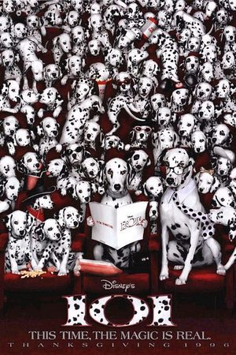
                    <div class="movie-card-content">
                        <h3>101 далматинец (1996)</h3>
                        <p>Эксцентричная модельер Круэлла Де Виль похищает щенков далматинца для создания меховой шубы.</p>
                        <a href="#" class="read-more" onclick="openModal('101-dalmatians-info'); return false;">Подробнее</a>
                        <div id="101-dalmatians-info" style="display:none;">
                            <p><strong>Оригинальное название:</strong> 101 Dalmatians</p>
                            <p><strong>Год выпуска:</strong> 1996</p>
                            <p><strong>Режиссёр:</strong> Стивен Херек</p>
                            <p><strong>В ролях:</strong> Гленн Клоуз, Джефф Дэниелс, Джоэли Ричардсон, Джоан Плаурайт</p>
                            <p><strong>Жанр:</strong> Комедия, семейный</p>
                            <p><strong>Продолжительность:</strong> 103 мин</p>
                            <p><strong>Описание:</strong> Жестокая и стильная Круэлла Де Виль одержима идеей создания меховой шубы из далматинцев. Она похищает 99 щенков, а их родители, далматинцы Понго и Пердита, вместе с другими животными отправляются на их спасение.</p>
                        </div>
                    </div>
                </div>

                <div class="movie-card" data-movie-id="102-dalmatians-2000">
                    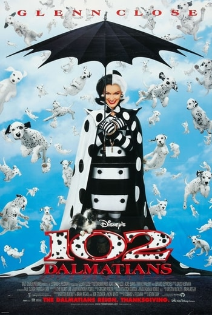
                    <div class="movie-card-content">
                        <h3>102 далматинца (2000)</h3>
                        <p>Круэлла Де Виль выходит из тюрьмы и снова начинает охоту за далматинцами.</p>
                        <a href="#" class="read-more" onclick="openModal('102-dalmatians-info'); return false;">Подробнее</a>
                        <div id="102-dalmatians-info" style="display:none;">
                            <p><strong>Оригинальное название:</strong> 102 Dalmatians</p>
                            <p><strong>Год выпуска:</strong> 2000</p>
                            <p><strong>Режиссёр:</strong> Кевин Лима</p>
                            <p><strong>В ролях:</strong> Гленн Клоуз, Жерар Депардье, Йоан Гриффит, Элис Эванс</p>
                            <p><strong>Жанр:</strong> Комедия, семейный</p>
                            <p><strong>Продолжительность:</strong> 100 мин</p>
                            <p><strong>Описание:</strong> После прохождения терапии Круэлла Де Виль выходит из тюрьмы, поклявшись никогда больше не интересоваться мехом. Однако, когда ее "лечение" дает сбой, она снова возвращается к своим злодейским планам, нацелившись на еще 102 далматинца.</p>
                        </div>
                    </div>
                </div>

                <div class="movie-card" data-movie-id="alice-in-wonderland-2010">
                    
                    <div class="movie-card-content">
                        <h3>Алиса в Стране чудес (2010)</h3>
                        <p>Повзрослевшая Алиса возвращается в волшебный мир, чтобы исполнить свое истинное предназначение.</p>
                        <a href="#" class="read-more" onclick="openModal('alice-in-wonderland-2010-info'); return false;">Подробнее</a>
                        <div id="alice-in-wonderland-2010-info" style="display:none;">
                            <p><strong>Оригинальное название:</strong> Alice in Wonderland</p>
                            <p><strong>Год выпуска:</strong> 2010</p>
                            <p><strong>Режиссёр:</strong> Тим Бёртон</p>
                            <p><strong>В ролях:</strong> Миа Васиковска, Джонни Депп, Энн Хэтэуэй, Хелена Бонэм Картер</p>
                            <p><strong>Жанр:</strong> Фэнтези, приключения</p>
                            <p><strong>Продолжительность:</strong> 108 мин</p>
                            <p><strong>Описание:</strong> Девятнадцатилетняя Алиса возвращается в волшебный мир Страны чудес, где она когда-то была в детстве. Ей предстоит встретиться со старыми друзьями и врагами, чтобы победить злую Красную Королеву и вернуть Белой Королеве ее законный трон.</p>
                        </div>
                    </div>
                </div>

                <div class="movie-card" data-movie-id="the-sorcerers-apprentice-2010">
                    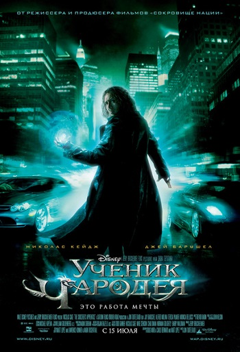
                    <div class="movie-card-content">
                        <h3>Ученик чародея (2010)</h3>
                        <p>Молодой человек открывает в себе магические способности и становится учеником могущественного волшебника.</p>
                        <a href="#" class="read-more" onclick="openModal('the-sorcerers-apprentice-info'); return false;">Подробнее</a>
                        <div id="the-sorcerers-apprentice-info" style="display:none;">
                            <p><strong>Оригинальное название:</strong> The Sorcerer's Apprentice</p>
                            <p><strong>Год выпуска:</strong> 2010</p>
                            <p><strong>Режиссёр:</strong> Джон Тёртелтауб</p>
                            <p><strong>В ролях:</strong> Николас Кейдж, Джей Барушель, Альфред Молина, Тереза Палмер</p>
                            <p><strong>Жанр:</strong> Фэнтези, приключения, комедия</p>
                            <p><strong>Продолжительность:</strong> 109 мин</p>
                            <p><strong>Описание:</strong> Фильм, вдохновленный классическим эпизодом из "Фантазии", рассказывает о современном студенте, которого неожиданно втягивают в древний конфликт между добром и злом, когда он становится учеником могущественного мага.</p>
                        </div>
                    </div>
                </div>

                <div class="movie-card" data-movie-id="maleficent-2014">
                    
                    <div class="movie-card-content">
                        <h3>Малефисента (2014)</h3>
                        <p>История о волшебнице Малефисенте, которая прокляла принцессу Аврору, но впоследствии узнала правду о любви и прощении.</p>
                        <a href="#" class="read-more" onclick="openModal('maleficent-info'); return false;">Подробнее</a>
                        <div id="maleficent-info" style="display:none;">
                            <p><strong>Оригинальное название:</strong> Maleficent</p>
                            <p><strong>Год выпуска:</strong> 2014</p>
                            <p><strong>Режиссёр:</strong> Роберт Стромберг</p>
                            <p><strong>В ролях:</strong> Анджелина Джоли, Элль Фаннинг, Шарлто Копли, Сам Райли</p>
                            <p><strong>Жанр:</strong> Фэнтези, драма, приключения</p>
                            <p><strong>Продолжительность:</strong> 97 мин</p>
                            <p><strong>Описание:</strong> История злой волшебницы, которая прокляла принцессу, но потом изменилась под влиянием любви.</p>
                        </div>
                    </div>
                </div>

                <div class="movie-card" data-movie-id="cinderella-2015">
                    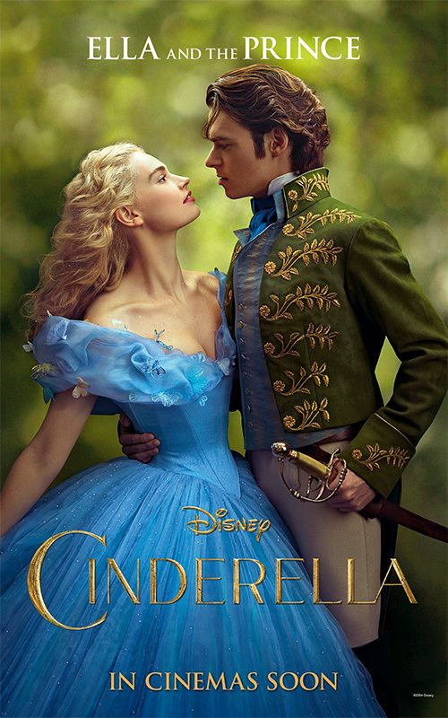
                    <div class="movie-card-content">
                        <h3>Золушка (2015)</h3>
                        <p>Переосмысление классической сказки о Золушке, девушке, чья доброта и храбрость приводят ее к счастливому концу.</p>
                        <a href="#" class="read-more" onclick="openModal('cinderella-info'); return false;">Подробнее</a>
                        <div id="cinderella-info" style="display:none;">
                            <p><strong>Оригинальное название:</strong> Cinderella</p>
                            <p><strong>Год выпуска:</strong> 2015</p>
                            <p><strong>Режиссёр:</strong> Кеннет Брана</p>
                            <p><strong>В ролях:</strong> Лили Джеймс, Кейт Бланшетт, Ричард Мэдден, Хелена Бонэм Картер</p>
                            <p><strong>Жанр:</strong> Фэнтези, романтика, драма</p>
                            <p><strong>Продолжительность:</strong> 105 мин</p>
                            <p><strong>Описание:</strong> История юной Эллы, которая после смерти матери оказывается во власти злой мачехи и ее дочерей. Ее жизнь меняется благодаря волшебству и встрече с принцем.</p>
                        </div>
                    </div>
                </div>

                <div class="movie-card" data-movie-id="alice-through-the-looking-glass-2016">
                    
                    <div class="movie-card-content">
                        <h3>Алиса в Зазеркалье (2016)</h3>
                        <p>Алиса возвращается в Страну чудес, чтобы спасти Безумного Шляпника и встретиться с Временем.</p>
                        <a href="#" class="read-more" onclick="openModal('alice-through-the-looking-glass-info'); return false;">Подробнее</a>
                        <div id="alice-through-the-looking-glass-info" style="display:none;">
                            <p><strong>Оригинальное название:</strong> Alice Through the Looking Glass</p>
                            <p><strong>Год выпуска:</strong> 2016</p>
                            <p><strong>Режиссёр:</strong> Джеймс Бобин</p>
                            <p><strong>В ролях:</strong> Миа Васиковска, Джонни Депп, Энн Хэтэуэй, Хелена Бонэм Картер, Саша Барон Коэн</p>
                            <p><strong>Жанр:</strong> Фэнтези, приключения</p>
                            <p><strong>Продолжительность:</strong> 113 мин</p>
                            <p><strong>Описание:</strong> Алиса возвращается в Подземье, чтобы спасти Безумного Шляпника от печали, когда он убежден, что его семья все еще жива. Для этого ей придется столкнуться с Временем и раскрыть тайны прошлого.</p>
                        </div>
                    </div>
                </div>

                <div class="movie-card" data-movie-id="the-jungle-book-2016">
                    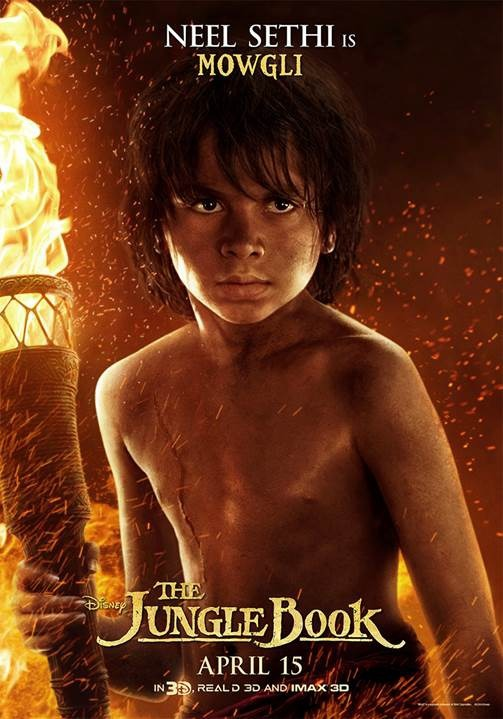
                    <div class="movie-card-content">
                        <h3>Книга джунглей (2016)</h3>
                        <p>Мальчик Маугли, выращенный животными, отправляется в опасное путешествие, чтобы найти свое место в мире.</p>
                        <a href="#" class="read-more" onclick="openModal('the-jungle-book-info'); return false;">Подробнее</a>
                        <div id="the-jungle-book-info" style="display:none;">
                            <p><strong>Оригинальное название:</strong> The Jungle Book</p>
                            <p><strong>Год выпуска:</strong> 2016</p>
                            <p><strong>Режиссёр:</strong> Джон Фавро</p>
                            <p><strong>В ролях:</strong> Нил Сетхи, Билл Мюррей (голос), Бен Кингсли (голос), Идрис Эльба (голос)</p>
                            <p><strong>Жанр:</strong> Приключения, фэнтези, семейный</p>
                            <p><strong>Продолжительность:</strong> 106 мин</p>
                            <p><strong>Описание:</strong> Визуально потрясающая адаптация классической истории о Маугли, человеческом детеныше, выращенном стаей волков, медведем Балу и пантерой Багирой. Ему приходится покинуть единственный дом, который он когда-либо знал, и отправиться в путешествие, чтобы найти свое место в джунглях.</p>
                        </div>
                    </div>
                </div>

                <div class="movie-card" data-movie-id="petes-dragon-2016">
                    
                    <div class="movie-card-content">
                        <h3>Пит и его дракон (2016)</h3>
                        <p>История дружбы мальчика-сироты и зеленого дракона по имени Эллиот, живущего в лесу.</p>
                        <a href="#" class="read-more" onclick="openModal('petes-dragon-info'); return false;">Подробнее</a>
                        <div id="petes-dragon-info" style="display:none;">
                            <p><strong>Оригинальное название:</strong> Pete's Dragon</p>
                            <p><strong>Год выпуска:</strong> 2016</p>
                            <p><strong>Режиссёр:</strong> Дэвид Лоури</p>
                            <p><strong>В ролях:</strong> Брайс Даллас Ховард, Оакс Фегли, Роберт Редфорд, Уэс Бентли</p>
                            <p><strong>Жанр:</strong> Фэнтези, приключения, семейный</p>
                            <p><strong>Продолжительность:</strong> 102 мин</p>
                            <p><strong>Описание:</strong> Переосмысление классической истории о мальчике-сироте Пите и его лучшем друге - невидимом драконе Эллиоте. Когда Пит обнаруживает, что люди вторгаются в его лесной дом, ему приходится защищать Эллиота от внешнего мира.</p>
                        </div>
                    </div>
                </div>

                <div class="movie-card" data-movie-id="beauty-and-the-beast-2017">
                    
                    <div class="movie-card-content">
                        <h3>Красавица и Чудовище (2017)</h3>
                        <p>Музыкальная фэнтези-история о молодой женщине, которая попадает в заколдованный замок и находит любовь там, где меньше всего ожидала.</p>
                        <a href="#" class="read-more" onclick="openModal('beauty-and-the-beast-info'); return false;">Подробнее</a>
                        <div id="beauty-and-the-beast-info" style="display:none;">
                            <p><strong>Оригинальное название:</strong> Beauty and the Beast</p>
                            <p><strong>Год выпуска:</strong> 2017</p>
                            <p><strong>Режиссёр:</strong> Билл Кондон</p>
                            <p><strong>В ролях:</strong> Эмма Уотсон, Дэн Стивенс, Люк Эванс, Джош Гад, Кевин Клайн</p>
                            <p><strong>Жанр:</strong> Фэнтези, мюзикл, романтика</p>
                            <p><strong>Продолжительность:</strong> 129 мин</p>
                            <p><strong>Описание:</strong> Экранизация классического мультфильма Диснея о смелой и независимой Белль, которая отправляется на поиски своего отца и оказывается пленницей в замке загадочного Чудовища. Она постепенно узнает, что за его ужасающей внешностью скрывается доброе сердце.</p>
                        </div>
                    </div>
                </div>

                <div class="movie-card" data-movie-id="christopher-robin-2018">
                    
                    <div class="movie-card-content">
                        <h3>Кристофер Робин (2018)</h3>
                        <p>Повзрослевший Кристофер Робин вновь встречается со своими старыми друзьями из Стоакрового Леса.</p>
                        <a href="#" class="read-more" onclick="openModal('christopher-robin-info'); return false;">Подробнее</a>
                        <div id="christopher-robin-info" style="display:none;">
                            <p><strong>Оригинальное название:</strong> Christopher Robin</p>
                            <p><strong>Год выпуска:</strong> 2018</p>
                            <p><strong>Режиссёр:</strong> Марк Форстер</p>
                            <p><strong>В ролях:</strong> Юэн Макгрегор, Хейли Этвелл, Бронте Кармайкл</p>
                            <p><strong>Жанр:</strong> Семейный, фэнтези, драма</p>
                            <p><strong>Продолжительность:</strong> 104 мин</p>
                            <p><strong>Описание:</strong> Кристофер Робин, теперь уже взрослый мужчина, потерял свое чувство воображения и радости. Его жизнь меняется, когда он воссоединяется со своим старым другом, Винни-Пухом, и помогает ему и его друзьям найти дорогу домой.</p>
                        </div>
                    </div>
                </div>

                <div class="movie-card" data-movie-id="dumbo-2019">
                    
                    <div class="movie-card-content">
                        <h3>Дамбо (2019)</h3>
                        <p>Маленький слоненок с большими ушами учится летать и спасает цирк от разорения.</p>
                        <a href="#" class="read-more" onclick="openModal('dumbo-info'); return false;">Подробнее</a>
                        <div id="dumbo-info" style="display:none;">
                            <p><strong>Оригинальное название:</strong> Dumbo</p>
                            <p><strong>Год выпуска:</strong> 2019</p>
                            <p><strong>Режиссёр:</strong> Тим Бёртон</p>
                            <p><strong>В ролях:</strong> Колин Фаррелл, Майкл Китон, Дэнни ДеВито, Ева Грин</p>
                            <p><strong>Жанр:</strong> Семейный, фэнтези, драма</p>
                            <p><strong>Продолжительность:</strong> 112 мин</p>
                            <p><strong>Описание:</strong> История о слоненке Дамбо, родившемся с необычайно большими ушами, из-за чего над ним все смеялись. Но когда выясняется, что его уши позволяют ему летать, он становится звездой цирка, привлекая внимание недобросовестных бизнесменов.</p>
                        </div>
                    </div>
                </div>

                <div class="movie-card" data-movie-id="aladdin-2019">
                    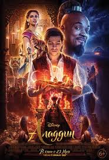
                    <div class="movie-card-content">
                        <h3>Аладдин (2019)</h3>
                        <p>Яркое приключение о бедном, но добросердечном юноше, который находит волшебную лампу и загадывает три желания.</p>
                        <a href="#" class="read-more" onclick="openModal('aladdin-info'); return false;">Подробнее</a>
                        <div id="aladdin-info" style="display:none;">
                            <p><strong>Оригинальное название:</strong> Aladdin</p>
                            <p><strong>Год выпуска:</strong> 2019</p>
                            <p><strong>Режиссёр:</strong> Гай Ричи</p>
                            <p><strong>В ролях:</strong> Мена Массуд, Наоми Скотт, Уилл Смит, Марван Кензари</p>
                            <p><strong>Жанр:</strong> Фэнтези, мюзикл, приключения</p>
                            <p><strong>Продолжительность:</strong> 128 мин</p>
                            <p><strong>Описание:</strong> Киноверсия классического мультфильма Диснея о уличном воришке Аладдине, который влюбляется в принцессу Жасмин и с помощью могущественного Джинна пытается завоевать ее сердце и спасти Аграбу от злого визиря Джафара.</p>
                        </div>
                    </div>
                </div>

                <div class="movie-card" data-movie-id="the-lion-king-2019">
                    
                    <div class="movie-card-content">
                        <h3>Король Лев (2019)</h3>
                        <p>Фотореалистичная версия истории о Симбе, молодом льве, который должен вернуть свое законное место на троне.</p>
                        <a href="#" class="read-more" onclick="openModal('the-lion-king-info'); return false;">Подробнее</a>
                        <div id="the-lion-king-info" style="display:none;">
                            <p><strong>Оригинальное название:</strong> The Lion King</p>
                            <p><strong>Год выпуска:</strong> 2019</p>
                            <p><strong>Режиссёр:</strong> Джон Фавро</p>
                            <p><strong>В ролях:</strong> Дональд Гловер (голос), Бейонсе Ноулз-Картер (голос), Джеймс Эрл Джонс (голос)</p>
                            <p><strong>Жанр:</strong> Приключения, драма, мюзикл</p>
                            <p><strong>Продолжительность:</strong> 118 мин</p>
                            <p><strong>Описание:</strong> Визуально потрясающий фильм, использующий передовые технологии, чтобы перенести зрителей в африканскую саванну. История повествует о молодом льве Симбе, который должен преодолеть трагедию и принять свое предназначение как король Прайдленда.</p>
                        </div>
                    </div>
                </div>

                <div class="movie-card" data-movie-id="maleficent-mistress-of-evil-2019">
                    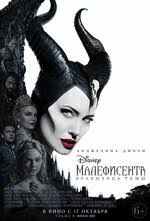
                    <div class="movie-card-content">
                        <h3>Малефисента: Владычица тьмы (2019)</h3>
                        <p>Продолжение истории Малефисенты и Авроры, когда они сталкиваются с новыми угрозами и сложными семейными связями.</p>
                        <a href="#" class="read-more" onclick="openModal('maleficent-mistress-of-evil-info'); return false;">Подробнее</a>
                        <div id="maleficent-mistress-of-evil-info" style="display:none;">
                            <p><strong>Оригинальное название:</strong> Maleficent: Mistress of Evil</p>
                            <p><strong>Год выпуска:</strong> 2019</p>
                            <p><strong>Режиссёр:</strong> Йоахим Роннинг</p>
                            <p><strong>В ролях:</strong> Анджелина Джоли, Элль Фаннинг, Мишель Пфайффер, Сэм Райли</p>
                            <p><strong>Жанр:</strong> Фэнтези, приключения, семейный</p>
                            <p><strong>Продолжительность:</strong> 118 мин</p>
                            <p><strong>Описание:</strong> Спустя несколько лет после событий первого фильма, Малефисента и ее крестница Аврора начинают сомневаться в своих семейных связях, когда на горизонте появляется новая угроза, ставящая под вопрос их будущее.</p>
                        </div>
                    </div>
                </div>

                <div class="movie-card" data-movie-id="lady-and-the-tramp-2019">
                    
                    <div class="movie-card-content">
                        <h3>Леди и Бродяга (2019)</h3>
                        <p>История любви между породистой кокер-спаниелем и беспородным, но обаятельным псом.</p>
                        <a href="#" class="read-more" onclick="openModal('lady-and-the-tramp-info'); return false;">Подробнее</a>
                        <div id="lady-and-the-tramp-info" style="display:none;">
                            <p><strong>Оригинальное название:</strong> Lady and the Tramp</p>
                            <p><strong>Год выпуска:</strong> 2019</p>
                            <p><strong>Режиссёр:</strong> Чарли Бин</p>
                            <p><strong>В ролях:</strong> Тесса Томпсон (голос), Джастин Теру (голос), Кирси Клемонс, Томас Манн</p>
                            <p><strong>Жанр:</strong> Романтика, мюзикл, семейный</p>
                            <p><strong>Продолжительность:</strong> 103 мин</p>
                            <p><strong>Описание:</strong> Адаптация классического анимационного фильма с использованием живых актеров и CGI-животных. Фильм рассказывает о романтических приключениях породистой собаки Леди и бездомного пса Бродяги.</p>
                        </div>
                    </div>
                </div>

                <div class="movie-card" data-movie-id="mulan-2020">
                    
                    <div class="movie-card-content">
                        <h3>Мулан (2020)</h3>
                        <p>Молодая женщина, переодевшись мужчиной, отправляется на войну вместо своего больного отца, чтобы спасти честь семьи.</p>
                        <a href="#" class="read-more" onclick="openModal('mulan-info'); return false;">Подробнее</a>
                        <div id="mulan-info" style="display:none;">
                            <p><strong>Оригинальное название:</strong> Mulan</p>
                            <p><strong>Год выпуска:</strong> 2020</p>
                            <p><strong>Режиссёр:</strong> Ники Каро</p>
                            <p><strong>В ролях:</strong> Лю Ифэй, Донни Йен, Гун Ли, Джейсон Скотт Ли, Джет Ли</p>
                            <p><strong>Жанр:</strong> Приключения, драма, боевик</p>
                            <p><strong>Продолжительность:</strong> 115 мин</p>
                            <p><strong>Описание:</strong> Эпическое приключение, основанное на китайской легенде о Хуа Мулан. Когда император приказывает одному мужчине из каждой семьи служить в армии, Мулан, старшая дочь почетного воина, занимает место своего больного отца, притворяясь мужчиной, чтобы защитить свою семью и страну.</p>
                        </div>
                    </div>
                </div>

                <div class="movie-card" data-movie-id="cruella-2021">
                    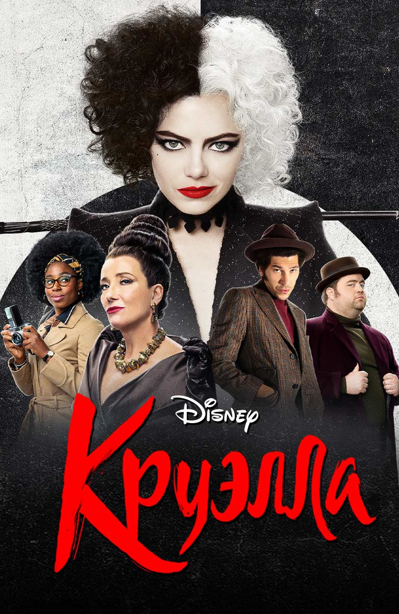
                    <div class="movie-card-content">
                        <h3>Круэлла (2021)</h3>
                        <p>История происхождения одной из самых известных и стильных злодеек Disney, Круэллы Де Виль.</p>
                        <a href="#" class="read-more" onclick="openModal('cruella-info'); return false;">Подробнее</a>
                        <div id="cruella-info" style="display:none;">
                            <p><strong>Оригинальное название:</strong> Cruella</p>
                            <p><strong>Год выпуска:</strong> 2021</p>
                            <p><strong>Режиссёр:</strong> Крэйг Гиллеспи</p>
                            <p><strong>В ролях:</strong> Эмма Стоун, Эмма Томпсон, Джоэл Фрай, Пол Уолтер Хаузер</p>
                            <p><strong>Жанр:</strong> Комедия, криминал, драма</p>
                            <p><strong>Продолжительность:</strong> 134 мин</p>
                            <p><strong>Описание:</strong> Фильм рассказывает о ранних годах жизни Эстеллы Миллер, амбициозной модной дизайнера в Лондоне 1970-х годов, которая постепенно превращается в безжалостную Круэллу Де Виль.</p>
                        </div>
                    </div>
                </div>

                <div class="movie-card" data-movie-id="pinocchio-2022">
                    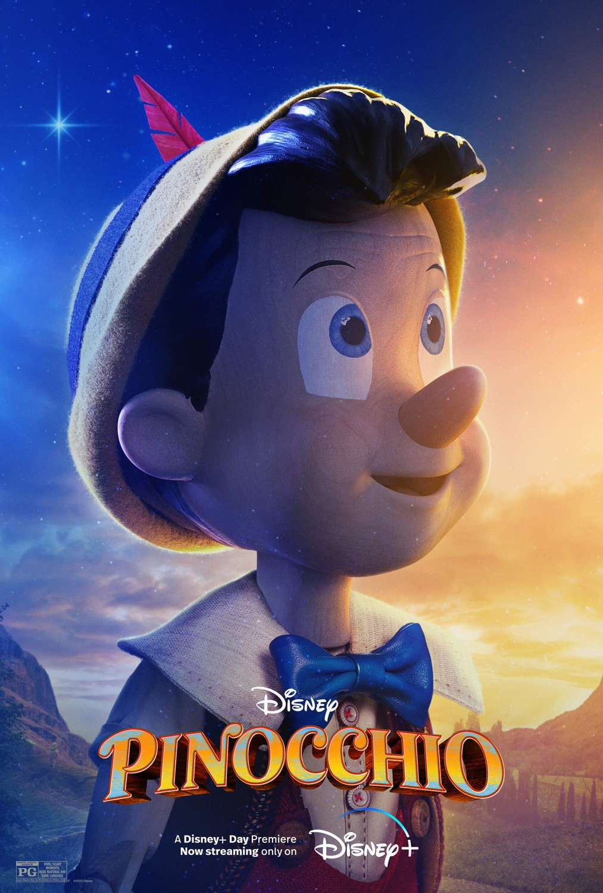
                    <div class="movie-card-content">
                        <h3>Пиноккио (2022)</h3>
                        <p>История деревянной куклы, которая мечтает стать настоящим мальчиком, отправляясь в невероятное приключение.</p>
                        <a href="#" class="read-more" onclick="openModal('pinocchio-info'); return false;">Подробнее</a>
                        <div id="pinocchio-info" style="display:none;">
                            <p><strong>Оригинальное название:</strong> Pinocchio</p>
                            <p><strong>Год выпуска:</strong> 2022</p>
                            <p><strong>Режиссёр:</strong> Роберт Земекис</p>
                            <p><strong>В ролях:</strong> Том Хэнкс, Бенджамин Эван Эйнсворт (голос), Джозеф Гордон-Левитт (голос)</p>
                            <p><strong>Жанр:</strong> Фэнтези, семейный, мюзикл</p>
                            <p><strong>Продолжительность:</strong> 105 мин</p>
                            <p><strong>Описание:</strong> Новая адаптация классической истории о деревянной кукле, созданной Джеппетто, которая оживает и отправляется в опасное путешествие, чтобы доказать, что она достойна стать настоящим мальчиком.</p>
                        </div>
                    </div>
                </div>

                <div class="movie-card" data-movie-id="the-little-mermaid-2023">
                    
                    <div class="movie-card-content">
                        <h3>Русалочка (2023)</h3>
                        <p>Молодая русалка заключает сделку с морской ведьмой, чтобы получить человеческие ноги и шанс быть с принцем на суше.</p>
                        <a href="#" class="read-more" onclick="openModal('the-little-mermaid-info'); return false;">Подробнее</a>
                        <div id="the-little-mermaid-info" style="display:none;">
                            <p><strong>Оригинальное название:</strong> The Little Mermaid</p>
                            <p><strong>Год выпуска:</strong> 2023</p>
                            <p><strong>Режиссёр:</strong> Роб Маршалл</p>
                            <p><strong>В ролях:</strong> Холли Бэйли, Джона Хауэр-Кинг, Мелисса Маккарти, Хавьер Бардем</p>
                            <p><strong>Жанр:</strong> Фэнтези, мюзикл, романтика</p>
                            <p><strong>Продолжительность:</strong> 135 мин</p>
                            <p><strong>Описание:</strong> Киноадаптация любимой классической сказки о русалочке Ариэль, которая мечтает узнать о мире над водой и, вопреки запрету отца, заключает сделку со злой морской ведьмой Урсулой, чтобы обменять свой голос на ноги и возможность жить среди людей.</p>
                        </div>
                    </div>
                </div>
            </div>
        </section>

        <div id="modal" class="movie-detail-overlay">
            <div class="movie-detail-content">
                <span class="movie-detail-close" onclick="closeModal()">&times;</span>
                <div id="modal-body"></div>
            </div>
            </div>
        </div>
    </div>
</section>


<section id="cartoons">

    <h2>Наши Волшебные Мультфильмы</h2>

    <h3 style="color: var(--disney-blue); margin-top: 40px; text-align: center;">Классика Disney (1930–1990-е)</h3>
    <div class="movie-grid">
        <div class="movie-card" data-movie-id="snow-white-1937">
            
            <div class="movie-card-content">
                <h3>Белоснежка и семь гномов (1937)</h3>
                <p>Первый полнометражный анимационный фильм Диснея, классическая история о принцессе и злой королеве.</p>
                <a href="#" class="read-more" onclick="openModal('snow-white-1937-info'); return false;">Подробнее</a>
                <div id="snow-white-1937-info" class="movie-details" style="display:none;">
                    <p><strong>Оригинальное название:</strong> Snow White and the Seven Dwarfs</p>
                    <p><strong>Год выпуска:</strong> 1937</p>
                    <p><strong>Режиссёр:</strong> Дэвид Хэнд</p>
                    <p><strong>Жанр:</strong> Анимация, фэнтези, семейный</p>
                    <p><strong>Продолжительность:</strong> 83 мин</p>
                    <p><strong>Описание:</strong> Красавица принцесса Белоснежка вынуждена бежать от своей злой мачехи, Королевы, которая завидует ее красоте. Она находит убежище у семи очаровательных гномов, пока ее судьба не принимает неожиданный поворот.</p>
                </div>
            </div>
        </div>
        <div class="movie-card" data-movie-id="pinocchio-1940">
            
            <div class="movie-card-content">
                <h3>Пиноккио (1940)</h3>
                <p>Трогательная история деревянной куклы, которая мечтает стать настоящим мальчиком.</p>
                <a href="#" class="read-more" onclick="openModal('pinocchio-1940-info'); return false;">Подробнее</a>
                <div id="pinocchio-1940-info" class="movie-details" style="display:none;">
                    <p><strong>Оригинальное название:</strong> Pinocchio</p>
                    <p><strong>Год выпуска:</strong> 1940</p>
                    <p><strong>Режиссёр:</strong> Бен Шарпстин, Хэмилтон Ласки</p>
                    <p><strong>Жанр:</strong> Анимация, фэнтези, семейный</p>
                    <p><strong>Продолжительность:</strong> 88 мин</p>
                    <p><strong>Описание:</strong> Деревянная кукла по имени Пиноккио оживает и, при помощи своего сверчка-наставника Джимини, должен доказать, что он достоин стать настоящим мальчиком.</p>
                </div>
            </div>
        </div>
        <div class="movie-card" data-movie-id="bambi-1942">
            
            <div class="movie-card-content">
                <h3>Бэмби (1942)</h3>
                <p>История олененка Бэмби и его взрослении в лесу, наполненная красотой природы и жизненными уроками.</p>
                <a href="#" class="read-more" onclick="openModal('bambi-1942-info'); return false;">Подробнее</a>
                <div id="bambi-1942-info" class="movie-details" style="display:none;">
                    <p><strong>Оригинальное название:</strong> Bambi</p>
                    <p><strong>Год выпуска:</strong> 1942</p>
                    <p><strong>Режиссёр:</strong> Дэвид Хэнд</p>
                    <p><strong>Жанр:</strong> Анимация, драма, семейный</p>
                    <p><strong>Продолжительность:</strong> 70 мин</p>
                    <p><strong>Описание:</strong> Юный олененок по имени Бэмби узнает о жизни в лесу со своими друзьями: зайцем Тампером и скунсом Флауэром, а также о том, как опасно соседство с человеком.</p>
                </div>
            </div>
        </div>
        <div class="movie-card" data-movie-id="cinderella-1950">
            
            <div class="movie-card-content">
                <h3>Золушка (1950)</h3>
                <p>Волшебная сказка о девушке, чьи мечты сбываются с помощью феи-крестной и хрустальной туфельки.</p>
                <a href="#" class="read-more" onclick="openModal('cinderella-1950-info'); return false;">Подробнее</a>
                <div id="cinderella-1950-info" class="movie-details" style="display:none;">
                    <p><strong>Оригинальное название:</strong> Cinderella</p>
                    <p><strong>Год выпуска:</strong> 1950</p>
                    <p><strong>Режиссёр:</strong> Клайд Джероними, Уилфред Джексон, Хэмилтон Ласки</p>
                    <p><strong>Жанр:</strong> Анимация, фэнтези, семейный</p>
                    <p><strong>Продолжительность:</strong> 74 мин</p>
                    <p><strong>Описание:</strong> Золушка, живущая под гнетом злой мачехи и сводных сестер, получает шанс попасть на королевский бал благодаря доброй фее-крестной.</p>
                </div>
            </div>
        </div>
        <div class="movie-card" data-movie-id="alice-wonderland-1951">
            
            <div class="movie-card-content">
                <h3>Алиса в Стране чудес (1951)</h3>
                <p>Классический мультфильм по мотивам книги Льюиса Кэрролла о приключениях девочки Алисы в волшебной стране, полной странных и удивительных существ.</p>
                <a href="#" class="read-more" onclick="openModal('alice-wonderland-1951-info'); return false;">Подробнее</a>
                <div id="alice-wonderland-1951-info" class="movie-details" style="display:none;">
                    <p><strong>Оригинальное название:</strong> Alice in Wonderland</p>
                    <p><strong>Режиссёр:</strong> Клайд Джероними, Уилфред Джексон, Хэмилтон Луис, Уильям Хэнна и Джозеф Барбера</p>
                    <p><strong>Год выпуска:</strong> 1951</p>
                    <p><strong>Жанр:</strong> анимация, фэнтези, приключения</p>
                    <p><strong>Продолжительность:</strong> 75 мин</p>
                    <p><strong>Описание:</strong> Алиса случайно попадает в волшебный мир, где встречает загадочных персонажей — Шляпника, Безумного Зайца, Чеширского Кота и других. Её приключения полны загадок, чудес и весёлых историй.</p>
                </div>
            </div>
        </div>
        <div class="movie-card" data-movie-id="sleeping-beauty-1959">
            
            <div class="movie-card-content">
                <h3>Спящая красавица (1959)</h3>
                <p>Эпическая история о принцессе Авроре, проклятой злой колдуньей Малефисентой, и ее пробуждении.</p>
                <a href="#" class="read-more" onclick="openModal('sleeping-beauty-1959-info'); return false;">Подробнее</a>
                <div id="sleeping-beauty-1959-info" class="movie-details" style="display:none;">
                    <p><strong>Оригинальное название:</strong> Sleeping Beauty</p>
                    <p><strong>Год выпуска:</strong> 1959</p>
                    <p><strong>Режиссёр:</strong> Клайд Джероними</p>
                    <p><strong>Жанр:</strong> Анимация, фэнтези, мюзикл</p>
                    <p><strong>Продолжительность:</strong> 75 мин</p>
                    <p><strong>Описание:</strong> Злая колдунья Малефисента накладывает заклятие на принцессу Аврору, предсказав, что та умрет от укола веретеном в свой шестнадцатый день рождения. Три добрые феи пытаются защитить принцессу.</p>
                </div>
            </div>
        </div>
        <div class="movie-card" data-movie-id="101-dalmatians-1961">
            
            <div class="movie-card-content">
                <h3>101 далматинец (1961)</h3>
                <p>Веселое приключение щенков-далматинцев, спасающихся от коварной Круэллы де Виль.</p>
                <a href="#" class="read-more" onclick="openModal('101-dalmatians-1961-info'); return false;">Подробнее</a>
                <div id="101-dalmatians-1961-info" class="movie-details" style="display:none;">
                    <p><strong>Оригинальное название:</strong> One Hundred and One Dalmatians</p>
                    <p><strong>Год выпуска:</strong> 1961</p>
                    <p><strong>Режиссёр:</strong> Вольфганг Райтерман, Хэмилтон Ласки, Клайд Джероними</p>
                    <p><strong>Жанр:</strong> Анимация, приключения, комедия</p>
                    <p><strong>Продолжительность:</strong> 79 мин</p>
                    <p><strong>Описание:</strong> Когда Круэлла Де Виль похищает всех щенков-далматинцев в Лондоне, родители щенков, Понго и Пердита, начинают отчаянную спасательную операцию.</p>
                </div>
            </div>
        </div>
        <div class="movie-card" data-movie-id="little-mermaid-1989">
            
            <div class="movie-card-content">
                <h3>Русалочка (1989)</h3>
                <p>Очаровательная история принцессы Ариэль, которая мечтает стать частью человеческого мира.</p>
                <a href="#" class="read-more" onclick="openModal('little-mermaid-1989-info'); return false;">Подробнее</a>
                <div id="little-mermaid-1989-info" class="movie-details" style="display:none;">
                    <p><strong>Оригинальное название:</strong> The Little Mermaid</p>
                    <p><strong>Год выпуска:</strong> 1989</p>
                    <p><strong>Режиссёр:</strong> Рон Клементс, Джон Маскер</p>
                    <p><strong>Жанр:</strong> Анимация, мюзикл, фэнтези</p>
                    <p><strong>Продолжительность:</strong> 83 мин</p>
                    <p><strong>Описание:</strong> Русалочка Ариэль заключает сделку с морской ведьмой Урсулой, чтобы стать человеком и встретить принца Эрика.</p>
                </div>
            </div>
        </div>
        <div class="movie-card" data-movie-id="beauty-and-the-beast-1991">
            
            <div class="movie-card-content">
                <h3>Красавица и чудовище (1991)</h3>
                <p>Классический мультфильм о Белль, которая находит истинную красоту в заколдованном Чудовище.</p>
                <a href="#" class="read-more" onclick="openModal('beauty-and-the-beast-1991-info'); return false;">Подробнее</a>
                <div id="beauty-and-the-beast-1991-info" class="movie-details" style="display:none;">
                    <p><strong>Оригинальное название:</strong> Beauty and the Beast</p>
                    <p><strong>Год выпуска:</strong> 1991</p>
                    <p><strong>Режиссёр:</strong> Гари Труздейл, Кирк Уайз</p>
                    <p><strong>Жанр:</strong> Анимация, мюзикл, фэнтези</p>
                    <p><strong>Продолжительность:</strong> 84 мин</p>
                    <p><strong>Описание:</strong> Красавица Белль попадает в замок Чудовища, заколдованного принца, и должна научиться видеть его истинную доброту, чтобы разрушить заклятие.</p>
                </div>
            </div>
        </div>
        <div class="movie-card" data-movie-id="aladdin-1992">
            
            <div class="movie-card-content">
                <h3>Аладдин (1992)</h3>
                <p>Захватывающие приключения уличного парня Аладдина и его верного Джинна в сказочной Аграбе.</p>
                <a href="#" class="read-more" onclick="openModal('aladdin-1992-info'); return false;">Подробнее</a>
                <div id="aladdin-1992-info" class="movie-details" style="display:none;">
                    <p><strong>Оригинальное название:</strong> Aladdin</p>
                    <p><strong>Год выпуска:</strong> 1992</p>
                    <p><strong>Режиссёр:</strong> Рон Клементс, Джон Маскер</p>
                    <p><strong>Жанр:</strong> Анимация, приключения, мюзикл</p>
                    <p><strong>Продолжительность:</strong> 90 мин</p>
                    <p><strong>Описание:</strong> Уличный воришка Аладдин находит волшебную лампу с Джинном и использует ее силу, чтобы завоевать сердце принцессы Жасмин и помешать злому Джафару.</p>
                </div>
            </div>
        </div>
        <div class="movie-card" data-movie-id="lion-king-1994">
            
            <div class="movie-card-content">
                <h3>Король Лев (1994)</h3>
                <p>Эпическая история о взрослении львенка Симбы и его пути к принятию своей судьбы.</p>
                <a href="#" class="read-more" onclick="openModal('lion-king-1994-info'); return false;">Подробнее</a>
                <div id="lion-king-1994-info" class="movie-details" style="display:none;">
                    <p><strong>Оригинальное название:</strong> The Lion King</p>
                    <p><strong>Год выпуска:</strong> 1994</p>
                    <p><strong>Режиссёр:</strong> Роджер Аллерс, Роб Минкофф</p>
                    <p><strong>Жанр:</strong> Анимация, драма, мюзикл</p>
                    <p><strong>Продолжительность:</strong> 88 мин</p>
                    <p><strong>Описание:</strong> Молодой львенок Симба должен принять свою судьбу как король саванны после трагической гибели отца и интриг своего дяди Шрама.</p>
                </div>
            </div>
        </div>
        <div class="movie-card" data-movie-id="pocahontas-1995">
            
            <div class="movie-card-content">
                <h3>Покахонтас (1995)</h3>
                <p>История любви и дружбы между коренной американской принцессой Покахонтас и английским колонистом.</p>
                <a href="#" class="read-more" onclick="openModal('pocahontas-1995-info'); return false;">Подробнее</a>
                <div id="pocahontas-1995-info" class="movie-details" style="display:none;">
                    <p><strong>Оригинальное название:</strong> Pocahontas</p>
                    <p><strong>Год выпуска:</strong> 1995</p>
                    <p><strong>Режиссёр:</strong> Майк Гэбриел, Эрик Голдберг</p>
                    <p><strong>Жанр:</strong> Анимация, драма, романтика</p>
                    <p><strong>Продолжительность:</strong> 81 мин</p>
                    <p><strong>Описание:</strong> Коренная американская принцесса Покахонтас влюбляется в английского поселенца Джона Смита и пытается предотвратить конфликт между их народами.</p>
                </div>
            </div>
        </div>
        <div class="movie-card" data-movie-id="hunchback-notre-dame-1996">
            
            <div class="movie-card-content">
                <h3>Горбун из Нотр-Дама (1996)</h3>
                <p>Эмоциональная история о Квазимодо, звонаре собора Нотр-Дам, и его поиске места в мире.</p>
                <a href="#" class="read-more" onclick="openModal('hunchback-notre-dame-1996-info'); return false;">Подробнее</a>
                <div id="hunchback-notre-dame-1996-info" class="movie-details" style="display:none;">
                    <p><strong>Оригинальное название:</strong> The Hunchback of Notre Dame</p>
                    <p><strong>Год выпуска:</strong> 1996</p>
                    <p><strong>Режиссёр:</strong> Гари Труздейл, Кирк Уайз</p>
                    <p><strong>Жанр:</strong> Анимация, драма, мюзикл</p>
                    <p><strong>Продолжительность:</strong> 91 мин</p>
                    <p><strong>Описание:</strong> Квазимодо, горбун-звонарь собора Нотр-Дам, мечтает присоединиться к внешнему миру и найти признание, несмотря на жестокость своего опекуна, судьи Фролло.</p>
                </div>
            </div>
        </div>
        <div class="movie-card" data-movie-id="mulan-1998">
            
            <div class="movie-card-content">
                <h3>Мулан (1998)</h3>
                <p>История храброй девушки, которая, переодевшись мужчиной, отправляется на войну вместо своего отца.</p>
                <a href="#" class="read-more" onclick="openModal('mulan-1998-info'); return false;">Подробнее</a>
                <div id="mulan-1998-info" class="movie-details" style="display:none;">
                    <p><strong>Оригинальное название:</strong> Mulan</p>
                    <p><strong>Год выпуска:</strong> 1998</p>
                    <p><strong>Режиссёр:</strong> Тони Бэнкрофт, Барри Кук</p>
                    <p><strong>Жанр:</strong> Анимация, приключения, семейный</p>
                    <p><strong>Продолжительность:</strong> 88 мин</p>
                    <p><strong>Описание:</strong> Молодая девушка Мулан, чтобы спасти своего больного отца от призыва в армию, переодевается мужчиной и отправляется на войну с гуннами.</p>
                </div>
            </div>
        </div>
        <div class="movie-card" data-movie-id="tarzan-1999">
            
            <div class="movie-card-content">
                <h3>Тарзан (1999)</h3>
                <p>Увлекательная история о мальчике, выращенном гориллой, который должен выбрать между двумя мирами.</p>
                <a href="#" class="read-more" onclick="openModal('tarzan-1999-info'); return false;">Подробнее</a>
                <div id="tarzan-1999-info" class="movie-details" style="display:none;">
                    <p><strong>Оригинальное название:</strong> Tarzan</p>
                    <p><strong>Год выпуска:</strong> 1999</p>
                    <p><strong>Режиссёр:</strong> Крис Бак, Кевин Лима</p>
                    <p><strong>Жанр:</strong> Анимация, приключения, драма</p>
                    <p><strong>Продолжительность:</strong> 88 мин</p>
                    <p><strong>Описание:</strong> Выросший в джунглях среди горилл, Тарзан сталкивается с людьми, которые прибывают в его дом, и должен сделать выбор между своим миром животных и человеческим миром.</p>
                </div>
            </div>
        </div>
    </div>

    <h3 style="color: var(--disney-blue); margin-top: 40px; text-align: center;">Эпоха 2000–2010</h3>
    <div class="movie-grid">
        <div class="movie-card" data-movie-id="102-dalmatians-2000">
            
            <div class="movie-card-content">
                <h3>102 далматинца (2000)</h3>
                <p>Круэлла Де Виль выходит из тюрьмы и снова начинает охоту за далматинцами.</p>
                <a href="#" class="read-more" onclick="openModal('102-dalmatians-info'); return false;">Подробнее</a>
                <div id="102-dalmatians-info" style="display:none;">
                    <p><strong>Оригинальное название:</strong> 102 Dalmatians</p>
                    <p><strong>Год выпуска:</strong> 2000</p>
                    <p><strong>Режиссёр:</strong> Кевин Лима</p>
                    <p><strong>В ролях:</strong> Гленн Клоуз, Жерар Депардье, Йоан Гриффит, Элис Эванс</p>
                    <p><strong>Жанр:</strong> Комедия, семейный</p>
                    <p><strong>Продолжительность:</strong> 100 мин</p>
                    <p><strong>Описание:</strong> После прохождения терапии Круэлла Де Виль выходит из тюрьмы, поклявшись никогда больше не интересоваться мехом. Однако, когда ее "лечение" дает сбой, она снова возвращается к своим злодейским планам, нацелившись на еще 102 далматинца.</p>
                </div>
            </div>
        </div>
        <div class="movie-card" data-movie-id="atlantis-lost-empire-2001">
            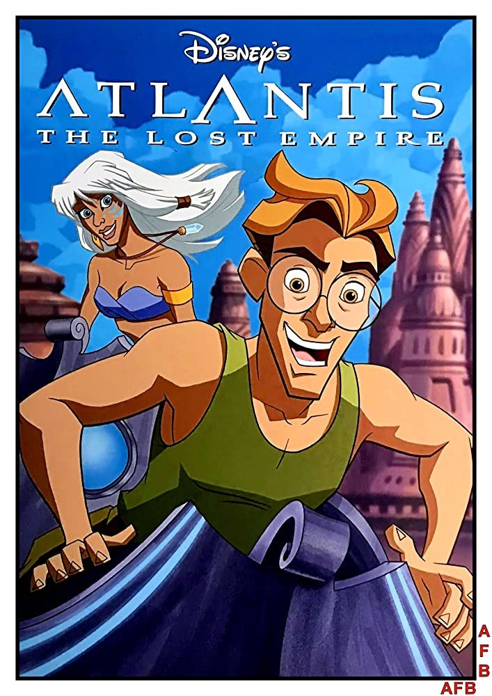
            <div class="movie-card-content">
                <h3>Атлантида: Затерянный мир (2001)</h3>
                <p>Молодой картограф отправляется в захватывающее приключение, чтобы найти затерянный город Атлантиду.</p>
                <a href="#" class="read-more" onclick="openModal('atlantis-info'); return false;">Подробнее</a>
                <div id="atlantis-info" style="display:none;">
                    <p><strong>Оригинальное название:</strong> Atlantis: The Lost Empire</p>
                    <p><strong>Год выпуска:</strong> 2001</p>
                    <p><strong>Режиссёр:</strong> Гари Труздейл, Кирк Уайз</p>
                    <p><strong>В ролях (озвучка):</strong> Майкл Дж. Фокс, Джеймс Гарнер, Кри Саммер, Леонард Нимой</p>
                    <p><strong>Жанр:</strong> Анимация, приключения, фэнтези, научная фантастика</p>
                    <p><strong>Продолжительность:</strong> 95 мин</p>
                    <p><strong>Описание:</strong> В 1914 году идеалистичный лингвист Майло Тэтч присоединяется к эксцентричной экспедиции, отправляющейся на поиски давно затерянного подводного царства Атлантиды, следуя старинной карте, которая, как он верит, приведет его к цели.</p>
                </div>
            </div>
        </div>
        <div class="movie-card" data-movie-id="lilo-stitch-2002">
            
            <div class="movie-card-content">
                <h3>Лило и Стич (2002)</h3>
                <p>История необычной дружбы между одинокой гавайской девочкой и инопланетным существом.</p>
                <a href="#" class="read-more" onclick="openModal('lilo-stitch-2002-info'); return false;">Подробнее</a>
                <div id="lilo-stitch-2002-info" class="movie-details" style="display:none;">
                    <p><strong>Оригинальное название:</strong> Lilo & Stitch</p>
                    <p><strong>Год выпуска:</strong> 2002</p>
                    <p><strong>Режиссёр:</strong> Дин ДеБлуа, Крис Сандерс</p>
                    <p><strong>Жанр:</strong> Анимация, комедия, фантастика</p>
                    <p><strong>Продолжительность:</strong> 85 мин</p>
                    <p><strong>Описание:</strong> Гавайская девочка Лило принимает странного "пса" по имени Стич, который на самом деле является инопланетным экспериментом, и учит его истинному смыслу семьи.</p>
                </div>
            </div>
        </div>
        <div class="movie-card" data-movie-id="brother-bear-2003">
            
            <div class="movie-card-content">
                <h3>Братец медвежонок (2003)</h3>
                <p>Приключения юноши, превращенного в медведя, который учится понимать природу и других существ.</p>
                <a href="#" class="read-more" onclick="openModal('brother-bear-2003-info'); return false;">Подробнее</a>
                <div id="brother-bear-2003-info" class="movie-details" style="display:none;">
                    <p><strong>Оригинальное название:</strong> Brother Bear</p>
                    <p><strong>Год выпуска:</strong> 2003</p>
                    <p><strong>Режиссёр:</strong> Аарон Блейз, Роберт Уокер</p>
                    <p><strong>Жанр:</strong> Анимация, приключения, драма</p>
                    <p><strong>Продолжительность:</strong> 85 мин</p>
                    <p><strong>Описание:</strong> Молодой охотник Кенаи превращается в медведя и должен научиться жить среди животных, чтобы снять проклятие, которое на него наложили духи.</p>
                </div>
            </div>
        </div>
        <div class="movie-card" data-movie-id="bolt-2008">
            
            <div class="movie-card-content">
                <h3>Вольт (2008)</h3>
                <p>История собаки-актера, которая верит, что у нее есть суперспособности, и отправляется в реальный мир.</p>
                <a href="#" class="read-more" onclick="openModal('bolt-2008-info'); return false;">Подробнее</a>
                <div id="bolt-2008-info" class="movie-details" style="display:none;">
                    <p><strong>Оригинальное название:</strong> Bolt</p>
                    <p><strong>Год выпуска:</strong> 2008</p>
                    <p><strong>Режиссёр:</strong> Байрон Ховард, Крис Уильямс</p>
                    <p><strong>Жанр:</strong> Анимация, приключения, комедия</p>
                    <p><strong>Продолжительность:</strong> 96 мин</p>
                    <p><strong>Описание:</strong> Пес по имени Вольт, звезда телешоу, который думает, что обладает суперсилами, случайно оказывается в Нью-Йорке и отправляется в долгое путешествие домой.</p>
                </div>
            </div>
        </div>
        <div class="movie-card" data-movie-id="princess-frog-2009">
            
            <div class="movie-card-content">
                <h3>Принцесса и лягушка (2009)</h3>
                <p>Современная адаптация классической сказки, действие которой происходит в Новом Орлеане.</p>
                <a href="#" class="read-more" onclick="openModal('princess-frog-2009-info'); return false;">Подробнее</a>
                <div id="princess-frog-2009-info" class="movie-details" style="display:none;">
                    <p><strong>Оригинальное название:</strong> The Princess and the Frog</p>
                    <p><strong>Год выпуска:</strong> 2009</p>
                    <p><strong>Режиссёр:</strong> Рон Клементс, Джон Маскер</p>
                    <p><strong>Жанр:</strong> Анимация, мюзикл, фэнтези</p>
                    <p><strong>Продолжительность:</strong> 97 мин</p>
                    <p><strong>Описание:</strong> Официантка Тиана из Нового Орлеана встречает заколдованного принца-лягушку и сама превращается в лягушку, отправляясь в приключение, чтобы снять заклятие.</p>
                </div>
            </div>
        </div>
        <div class="movie-card" data-movie-id="tangled-2010">
            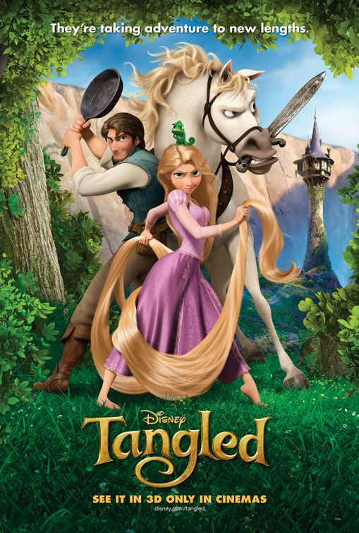
            <div class="movie-card-content">
                <h3>Рапунцель: Запутанная история (2010)</h3>
                <p>Веселая и динамичная история о принцессе с волшебными волосами, которая сбегает из башни.</p>
                <a href="#" class="read-more" onclick="openModal('tangled-2010-info'); return false;">Подробнее</a>
                <div id="tangled-2010-info" class="movie-details" style="display:none;">
                    <p><strong>Оригинальное название:</strong> Tangled</p>
                    <p><strong>Год выпуска:</strong> 2010</p>
                    <p><strong>Режиссёр:</strong> Нейтан Грено, Байрон Ховард</p>
                    <p><strong>Жанр:</strong> Анимация, приключения, комедия</p>
                    <p><strong>Продолжительность:</strong> 100 мин</p>
                    <p><strong>Описание:</strong> Принцесса Рапунцель с невероятно длинными волшебными волосами сбегает из своей башни с очаровательным разбойником Флинном Райдером, чтобы увидеть мир и узнать правду о своем происхождении.</p>
                </div>
            </div>
        </div>
    </div>

    <h3 style="color: var(--disney-blue); margin-top: 40px; text-align: center;">Современные мультфильмы Disney (с 2010 года)</h3>
    <div class="movie-grid">
        <div class="movie-card" data-movie-id="frozen-2013">
            
            <div class="movie-card-content">
                <h3>Холодное сердце (2013)</h3>
                <p>Завораживающая история о двух сестрах, принцессах Эренделла, и их путешествии, чтобы снять заклятие.</p>
                <a href="#" class="read-more" onclick="openModal('frozen-2013-info'); return false;">Подробнее</a>
                <div id="frozen-2013-info" class="movie-details" style="display:none;">
                    <p><strong>Оригинальное название:</strong> Frozen</p>
                    <p><strong>Год выпуска:</strong> 2013</p>
                    <p><strong>Режиссёр:</strong> Крис Бак, Дженнифер Ли</p>
                    <p><strong>Жанр:</strong> Анимация, приключения, мюзикл</p>
                    <p><strong>Продолжительность:</strong> 102 мин</p>
                    <p><strong>Описание:</strong> Принцесса Анна отправляется в опасное путешествие, чтобы найти свою сестру, Королеву Эльзу, чьи ледяные силы заморозили все королевство Эренделл.</p>
                </div>
            </div>
        </div>
        <div class="movie-card" data-movie-id="big-hero-6-2014">
            
            <div class="movie-card-content">
                <h3>Город героев (2014)</h3>
                <p>Динамичное приключение юного гения Хиро и его друга-робота Бэймакса в футуристическом городе.</p>
                <a href="#" class="read-more" onclick="openModal('big-hero-6-2014-info'); return false;">Подробнее</a>
                <div id="big-hero-6-2014-info" class="movie-details" style="display:none;">
                    <p><strong>Оригинальное название:</strong> Big Hero 6</p>
                    <p><strong>Год выпуска:</strong> 2014</p>
                    <p><strong>Режиссёр:</strong> Дон Холл, Крис Уильямс</p>
                    <p><strong>Жанр:</strong> Анимация, приключения, научная фантастика</p>
                    <p><strong>Продолжительность:</strong> 102 мин</p>
                    <p><strong>Описание:</strong> Юный гений робототехники Хиро Хамада объединяется с надувным роботом Бэймаксом и группой друзей, чтобы сформировать команду супергероев и раскрыть загадочное преступление.</p>
                </div>
            </div>
        </div>
        <div class="movie-card" data-movie-id="zootopia-2016">
            
            <div class="movie-card-content">
                <h3>Зверополис (2016)</h3>
                <p>Уморительное детективное приключение в городе, населенном антропоморфными животными.</p>
                <a href="#" class="read-more" onclick="openModal('zootopia-2016-info'); return false;">Подробнее</a>
                <div id="zootopia-2016-info" class="movie-details" style="display:none;">
                    <p><strong>Оригинальное название:</strong> Zootopia</p>
                    <p><strong>Год выпуска:</strong> 2016</p>
                    <p><strong>Режиссёр:</strong> Байрон Ховард, Рич Мур</p>
                    <p><strong>Жанр:</strong> Анимация, приключения, комедия</p>
                    <p><strong>Продолжительность:</strong> 108 мин</p>
                    <p><strong>Описание:</strong> Крольчиха Джуди Хоппс становится первой крольчихой-полицейским в Зверополисе и объединяется с хитрым лисом Ником Уайльдом, чтобы раскрыть крупное дело.</p>
                </div>
            </div>
        </div>
        <div class="movie-card" data-movie-id="moana-2016">
            
            <div class="movie-card-content">
                <h3>Моана (2016)</h3>
                <p>Приключение юной Моаны, которая отправляется в смелое плавание, чтобы спасти свой народ.</p>
                <a href="#" class="read-more" onclick="openModal('moana-2016-info'); return false;">Подробнее</a>
                <div id="moana-2016-info" class="movie-details" style="display:none;">
                    <p><strong>Оригинальное название:</strong> Moana</p>
                    <p><strong>Год выпуска:</strong> 2016</p>
                    <p><strong>Режиссёр:</strong> Рон Клементс, Джон Маскер</p>
                    <p><strong>Жанр:</strong> Анимация, приключения, мюзикл</p>
                    <p><strong>Продолжительность:</strong> 107 мин</p>
                    <p><strong>Описание:</strong> Отважная Моана, дочь вождя, отправляется в опасное плавание через океан, чтобы спасти свой народ и найти полубога Мауи, который может помочь ей восстановить сердце Те Фити.</p>
                </div>
            </div>
        </div>
        <div class="movie-card" data-movie-id="ralph-breaks-internet-2018">
            
            <div class="movie-card-content">
                <h3>Ральф против интернета (2018)</h3>
                <p>Ральф и Ванилопа отправляются в приключения по просторам Интернета, чтобы спасти игру "Гонки без правил".</p>
                <a href="#" class="read-more" onclick="openModal('ralph-breaks-internet-2018-info'); return false;">Подробнее</a>
                <div id="ralph-breaks-internet-2018-info" class="movie-details" style="display:none;">
                    <p><strong>Оригинальное название:</strong> Ralph Breaks the Internet</p>
                    <p><strong>Год выпуска:</strong> 2018</p>
                    <p><strong>Режиссёр:</strong> Фил Джонстон, Рич Мур</p>
                    <p><strong>Жанр:</strong> Анимация, приключения, комедия</p>
                    <p><strong>Продолжительность:</strong> 112 мин</p>
                    <p><strong>Описание:</strong> Ральф и Ванилопа фон Кекс покидают свой игровой автомат и отправляются в бескрайний и постоянно меняющийся мир Интернета в поисках запасной части для игры Ванилопы.</p>
                </div>
            </div>
        </div>
        <div class="movie-card" data-movie-id="frozen-2-2019">
            
            <div class="movie-card-content">
                <h3>Холодное сердце 2 (2019)</h3>
                <p>Эльза, Анна и их друзья отправляются в новое путешествие, чтобы узнать правду о магии Эльзы.</p>
                <a href="#" class="read-more" onclick="openModal('frozen-2-2019-info'); return false;">Подробнее</a>
                <div id="frozen-2-2019-info" class="movie-details" style="display:none;">
                    <p><strong>Оригинальное название:</strong> Frozen II</p>
                    <p><strong>Год выпуска:</strong> 2019</p>
                    <p><strong>Режиссёр:</strong> Крис Бак, Дженнифер Ли</p>
                    <p><strong>Жанр:</strong> Анимация, приключения, мюзикл</p>
                    <p><strong>Продолжительность:</strong> 103 мин</p>
                    <p><strong>Описание:</strong> Эльза слышит таинственный голос и вместе с Анной, Кристоффом, Олафом и Свеном отправляется в Зачарованный Лес, чтобы раскрыть секрет своих сил и спасти Эренделл.</p>
                </div>
            </div>
        </div>
    </div>
</section>

<script>
    function openModal(infoId) {
        var detailsDiv = document.getElementById(infoId);
        if (detailsDiv) {
            // Toggle display: If currently hidden, show it; otherwise, hide it.
            if (detailsDiv.style.display === 'none') {
                detailsDiv.style.display = 'block'; // Or 'flex', 'grid', depending on your CSS
            } else {
                detailsDiv.style.display = 'none';
            }
        }
    }

    // Optional: Add event listeners for "Подробнее" buttons that don't use onclick
    // This part assumes you might want to switch to a more modern event listener approach later.
    // var readMoreButtons = document.querySelectorAll('.read-more[data-movie-id]');
    // readMoreButtons.forEach(button => {
    //     button.addEventListener('click', function(event) {
    //         event.preventDefault(); // Prevent default link behavior
    //         var movieId = this.dataset.movieId;
    //         var detailsDiv = document.getElementById(movieId + '-info'); // Assuming ID format
    //         if (detailsDiv) {
    //             if (detailsDiv.style.display === 'none') {
    //                 detailsDiv.style.display = 'block';
    //             } else {
    //                 detailsDiv.style.display = 'none';
    //             }
    //         }
    //     });
    // });
</script>

    

        <section id="characters">
    <h2>Наши Любимые Персонажи</h2>
    <p>Здесь вы найдете информацию о самых известных и любимых персонажах из мира Диснея. От отважных принцесс до забавных животных и мудрых волшебников — каждый найдет своего фаворита.</p>

    <div style="margin-top: 30px;">

        <div style="display: flex; flex-wrap: wrap; align-items: center; margin-bottom: 40px; gap: 20px; border: 1px solid #eee; padding: 15px; border-radius: 8px; box-shadow: 0 4px 12px rgba(0, 0, 0, 0.05);">
            
            <div style="flex: 1; min-width: 280px;">
                <h3>Микки Маус</h3>
                <p><strong>Микки Маус</strong> – это икона Диснея, символ радости, оптимизма и невероятной выдержки. С момента своего дебюта в 1928 году он стал одним из самых узнаваемых персонажей в мире. Микки всегда готов к приключениям, проявляет себя как настоящий друг и лидер, вдохновляя миллионы своей бесконечной добротой и позитивным настроем.</p>
            </div>
        </div>

        <div style="display: flex; flex-wrap: wrap; align-items: center; margin-bottom: 40px; gap: 20px; border: 1px solid #eee; padding: 15px; border-radius: 8px; box-shadow: 0 4px 12px rgba(0, 0, 0, 0.05);">
            
            <div style="flex: 1; min-width: 280px;">
                <h3>Минни Маус</h3>
                <p>Элегантная и добрая <strong>Минни Маус</strong> – верная спутница и возлюбленная Микки. Она является воплощением грации и женственности, но при этом обладает сильным характером и всегда готова помочь своим друзьям. Минни известна своей любовью к музыке, моде и, конечно же, к Микки, что делает её одной из самых любимых героинь Диснея.</p>
            </div>
        </div>

        <div style="display: flex; flex-wrap: wrap; align-items: center; margin-bottom: 40px; gap: 20px; border: 1px solid #eee; padding: 15px; border-radius: 8px; box-shadow: 0 4px 12px rgba(0, 0, 0, 0.05);">
            
            <div style="flex: 1; min-width: 280px;">
                <h3>Дональд Дак</h3>
                <p>Вспыльчивый, но невероятно харизматичный <strong>Дональд Дак</strong> известен своим уникальным голосом и склонностью попадать в комичные ситуации. Несмотря на его частые неудачи и раздражительность, Дональд остается одним из самых любимых персонажей благодаря своей искренности, преданности друзьям и неизменной способности вызывать смех.</p>
            </div>
        </div>

        <div style="display: flex; flex-wrap: wrap; align-items: center; margin-bottom: 40px; gap: 20px; border: 1px solid #eee; padding: 15px; border-radius: 8px; box-shadow: 0 4px 12px rgba(0, 0, 0, 0.05);">
            
            <div style="flex: 1; min-width: 280px;">
                <h3>Дейзи Дак</h3>
                <p>Модная и самоуверенная <strong>Дейзи Дак</strong> – постоянная подруга Дональда и лучшая подруга Минни. Она известна своим сильным характером, чувством стиля и умением ставить Дональда на место. Дейзи приносит в мир Микки и его друзей свою уникальную энергию и очарование, являясь важной частью их веселой компании.</p>
            </div>
        </div>

        <div style="display: flex; flex-wrap: wrap; align-items: center; margin-bottom: 40px; gap: 20px; border: 1px solid #eee; padding: 15px; border-radius: 8px; box-shadow: 0 4px 12px rgba(0, 0, 0, 0.05);">
            
            <div style="flex: 1; min-width: 280px;">
                <h3>Гуфи</h3>
                <p>Неуклюжий, но бесконечно добрый и преданный <strong>Гуфи</strong> – один из лучших друзей Микки Мауса. Его простодушие и забавные выходки часто приводят к смешным ситуациям, но его сердце всегда на правильном месте. Гуфи учит нас быть собой, наслаждаться жизнью и быть верными друзьям, несмотря ни на что.</p>
            </div>
        </div>

        <div style="display: flex; flex-wrap: wrap; align-items: center; margin-bottom: 40px; gap: 20px; border: 1px solid #eee; padding: 15px; border-radius: 8px; box-shadow: 0 4px 12px rgba(0, 0, 0, 0.05);">
            
            <div style="flex: 1; min-width: 280px;">
                <h3>Плуто</h3>
                <p>Верный и жизнерадостный пес <strong>Плуто</strong> – лучший четвероногий друг Микки Мауса. Он не говорит, но его эмоции и действия выразительны и понятны каждому. Плуто является воплощением собачьей преданности, любопытства и игривости, что делает его любимцем многих поклонников Диснея.</p>
            </div>
        </div>

    </div>
</section>

 
        <section id="parks">
        <h2>Волшебные Парки Диснея</h2>
        <p>Окунитесь в атмосферу волшебства в одном из тематических парков Диснея по всему миру. Вас ждут захватывающие аттракционы, встречи с любимыми персонажами и незабываемые шоу.</p>
        <h2>Волшебство без границ: Ваше приключение в парках Диснея!</h2>
        <p>Приготовьтесь перенестись туда, где мечты становятся реальностью, а сказки оживают на ваших глазах! Откройте для себя шесть легендарных парков Диснея, каждый из которых — это отдельный, захватывающий мир, наполненный приключениями, смехом и незабываемыми моментами.</p>


        <h3>Анахайм, Калифорния, США: Где всё началось</h3>
        <p>Здесь, в сердце оригинального Диснейленда, вас ждёт прикосновение к истории и чистому волшебству. Пройдите по главной улице, где каждый уголок хранит воспоминания, исследуйте "Страну Фантазии" с её культовым Замком Спящей Красавицы и окунитесь в атмосферу ностальгии, которая согревает душу.</p>
        <div class="park-image-container">
            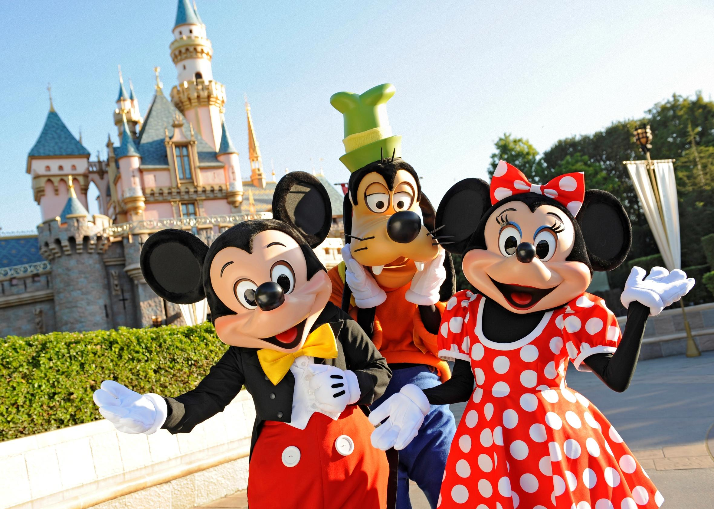
        </div>


        <h3>Орландо, Флорида, США: Мир неизведанных чудес</h3>
        <p>Добро пожаловать в крупнейший и самый масштабный курорт, где вас ждут четыре тематических парка, каждый из которых — отдельная вселенная. Поднимитесь к Замку Золушки в Magic Kingdom, совершите кругосветное путешествие по странам мира в Epcot, станьте частью любимых фильмов в Disney's Hollywood Studios и погрузитесь в дикую природу в Animal Kingdom. Здесь каждый день — это новая история.</p>
        <div class="park-image-container">
            
        </div>


        <h3>Токио, Япония: Волшебство с восточным колоритом</h3>
        <p>Откройте для себя Диснейленд и уникальный, невероятно детализированный DisneySea, который перенесёт вас в морские приключения и загадочные миры, вдохновлённые легендами. Почувствуйте японское гостеприимство, где каждый аттракцион и шоу продуманы до мельчайших деталей, а персонажи Диснея говорят на японском языке, добавляя неповторимого очарования.</p>
        <div class="park-image-container">
            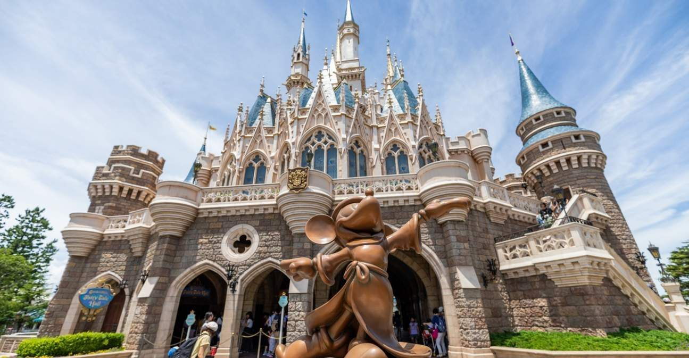
        </div>


        <h3>Париж, Франция: Сказка в европейском стиле</h3>
        <p>Испытайте истинно европейскую романтику и очарование в Диснейленде, расположенном вблизи Парижа. Замок Спящей Красавицы здесь величественнее, чем где-либо, а французский шик и внимание к деталям делают это место по-настоящему особенным. Откройте для себя мир, где встречаются классика Диснея и европейская элегантность.</p>
        <div class="park-image-container">
            
        </div>


        <h3>Гонконг, Китай: Жемчужина Востока</h3>
        <p>В этом компактном, но невероятно уютном парке вас ждёт смесь классического диснеевского волшебства и местных традиций. Насладитесь захватывающими аттракционами, встретьтесь с любимыми героями и станьте свидетелями потрясающих парадов, которые отражают уникальную культуру Гонконга.</p>
        <div class="park-image-container">
            
        </div>


        <h3>Шанхай, Китай: Футуристическое видение магии</h3>
        <p>Приготовьтесь к революционному опыту в самом новом и технологически продвинутом парке Диснея. Шанхайский Диснейленд поразит вас своими инновационными аттракционами, самым высоким Замком Волшебной Сказки и уникальными тематическими зонами, которые вы не найдёте больше нигде. Это взгляд в будущее развлечений, где магия встречается с технологией.</p>
        <div class="park-image-container">
            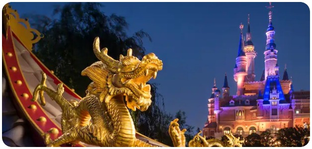
        </div>


        <p><strong>Нам нужно туда!</strong> Каждое из этих мест — это не просто парк аттракционов, это ворота в мир, где мечты сбываются, а возраст не имеет значения. Какое приключение вы выберете для себя первым?</p>
    </section>


<form action="contact_handler.php" method="POST">
    </form>   

    <footer>
        <p>&copy; 2025 Волшебный Мир Диснея. Все права защищены. Это фан-сайт.</p>
        <div class="social-links">
            <a href="https://facebook.com/Disney" target="_blank" aria-label="Facebook"><i class="fab fa-facebook"></i></a>
            <a href="https://twitter.com/Disney" target="_blank" aria-label="Twitter"><i class="fab fa-twitter"></i></a>
            <a href="https://instagram.com/Disney" target="_blank" aria-label="Instagram"><i class="fab fa-instagram"></i></a>
            <a href="https://youtube.com/Disney" target="_blank" aria-label="YouTube"><i class="fab fa-youtube"></i></a>
        </div>
    </footer>

    <script>
        // Smooth scrolling for navigation links
        document.querySelectorAll('nav ul li a').forEach(anchor => {
            anchor.addEventListener('click', function (e) {
                e.preventDefault();

                document.querySelector(this.getAttribute('href')).scrollIntoView({
                    behavior: 'smooth'
                });

                // Remove active class from all links
                document.querySelectorAll('nav ul li a').forEach(link => {
                    link.classList.remove('active');
                });
                // Add active class to the clicked link
                this.classList.add('active');
            });
        });

        // Placeholder for movie detail overlay functionality (not fully implemented in this HTML)
        document.querySelectorAll('.read-more').forEach(button => {
            button.addEventListener('click', function(e) {
                e.preventDefault();
                const movieId = this.dataset.movieId;
                // In a real application, you'd fetch and display movie details here
                console.log(`Show details for movie ID: ${movieId}`);
                // Example: Show a simple alert
                alert(`Подробнее о фильме/мультфильме: ${this.closest('.movie-card-content').querySelector('h3').textContent}`);
            });
        });
      
    </script>
  
</body>
</html>


<!-- No additional code needed. The HTML document is already complete and valid. -->


      